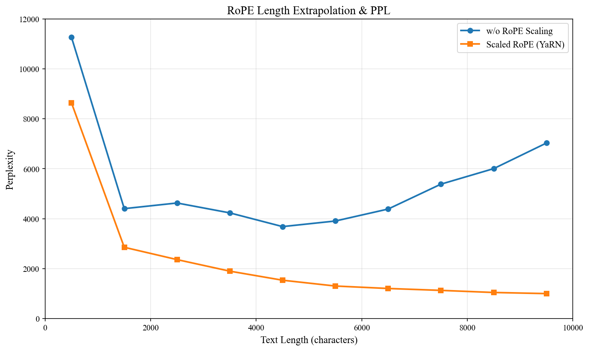

第 04 章 · 模型
RoPE 旋转位置编码
注意力本身对顺序毫无感知——把“猫追狗”和“狗追猫”当成同一个词袋。RoPE 的做法极其优雅：把每个 token 的向量按它的位置旋转一个角度，于是两个 token 的内积自然只和它们的相对距离有关。
1. 核心思想：把位置变成旋转角
把向量的每两个维度看成一个复数平面上的点。位置 m 的 token，其第 i 组维度旋转角度 m·θᵢ：
θᵢ = 1 / (10000 ^ (2i / d)) # 每组维度频率不同
[x', y'] = [x·cos(mθ) − y·sin(mθ), x·sin(mθ) + y·cos(mθ)]因为旋转是等距变换，两个向量都旋转后，它们的内积只依赖角度差
(m−n)·θ——也就是相对位置。这就是 RoPE 的全部魔法。
2. 动画：位置 m 的向量被旋转了多少
拖动滑块改变 token 的位置 m，观察蓝色向量（Query）如何随位置旋转；
橙色向量固定在位置 0。两者的夹角始终等于 m·θ。
交互动画位置 → 旋转角
🔑 相对位置不变性
⟨RoPE(q, m), RoPE(k, n)⟩ = f(m − n)。模型学到的是“相隔 3 个位置”这样的关系，
而不是“绝对第 7 个位置”。这让长度外推成为可能。
3. 多频率：为什么用一组不同的 θ
如果所有维度都用同一个 θ，旋转太快会让远距离位置“绕圈”难以区分。所以 RoPE 让不同维度对拥有从快到慢的频率： 高维旋转慢（负责粗粒度远近），低维旋转快（负责细粒度分辨）。
动画不同维度的旋转速度（同一位置）

✅ 动手提示
Notebook 里先带你练 torch.outer、torch.cos/sin、
torch.cat 与 rotate_half 的切片翻转，再让你自己写出
precompute_freqs_cis 与 apply_rotary_pos_emb。
难点是 unsqueeze 的广播维度——想清楚 cos/sin 要沿哪个轴对齐到 head_dim。